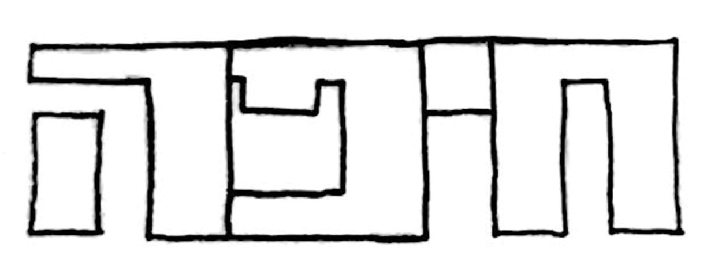
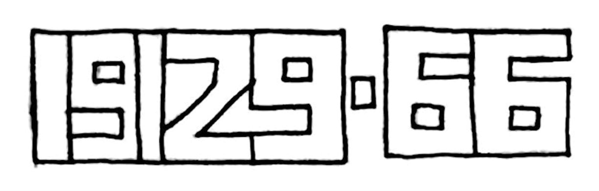
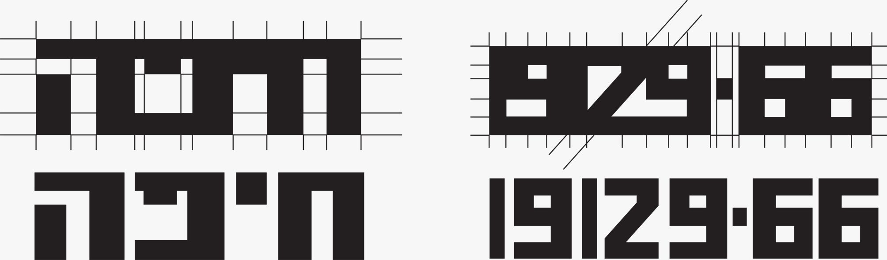
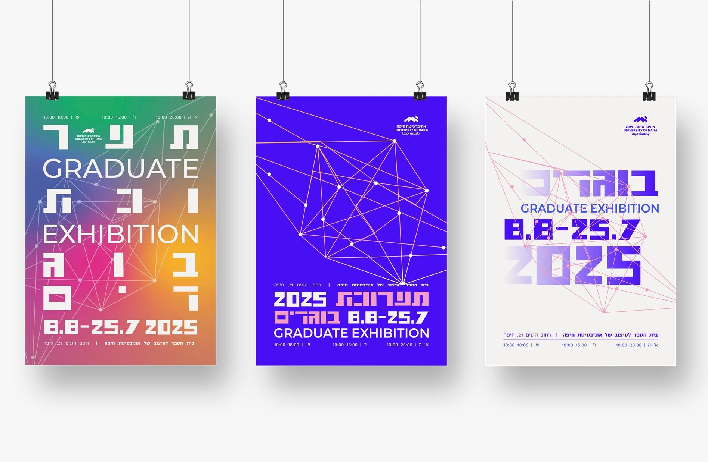

Metropoline
Hebrew typeface inspired by haifa for headlines

Project Overview
This project was created as part of a research lab course. I designed a typeface inspired by an old font found on a historical map of Haifa. The font is a part of a graduate exhibition branding project.
The research for the project focused on the metropolitan idea and the connection between the University of Haifa (located in the Carmel campus) and the German Colony campus (formerly WIZO).
- Timeline
- November 2024 - February 2025
- Project Type
- Academic, Type Design



Vector version

Font versions

Try it yourself
מטרופולין חיפה 1929
Posters from the graduate exhibition branding with the font
